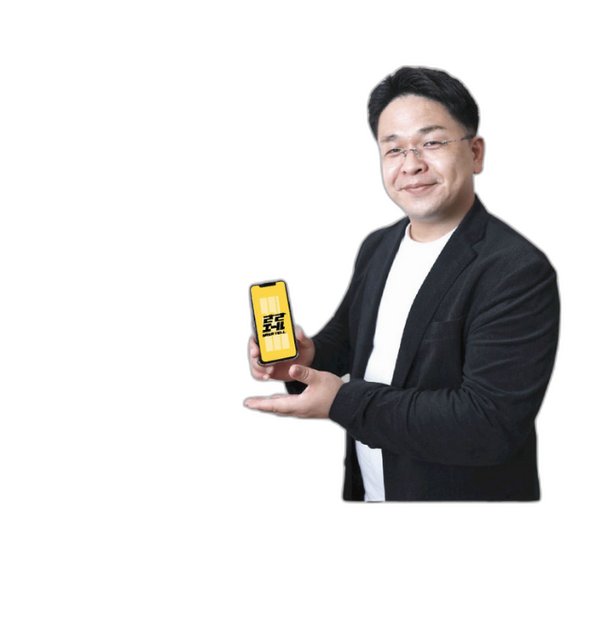

所要時間 だいたい1分
ささエールのさっさー
ささエールのさっさー
相性診断
ささエールのサービス、正直ちょっと多いです。
なので、8つの質問で、いまのあなたに合うものを一緒に探します。
こんにちは、笹原です。
むずかしか質問はしませんが。
直感で、ポチポチっと選んでくいやい。
むずかしか質問はしませんが。
直感で、ポチポチっと選んでくいやい。

- 名前もメールアドレスも聞きません
- 結果を見たあとに売り込みの電話がかかってくることもありません（電話番号を知らないので）
- 「ぜんぶ当てはまる」と思ったら、いちばん近いものを選んでください
1 / 8
Q1
集計しています…
※ 実際の計算は0.01秒で終わっています。雰囲気です。
診断結果
次点はこちら
結果はあくまで、きっかけです。
本当にぴったりかどうかは、話してみないとわかりません。
30分のレンタルさっさーで、いまの状況をそのまま聞かせてくいやい。
予約のときに「診断結果：」と書いてもらえると、話が早かです。